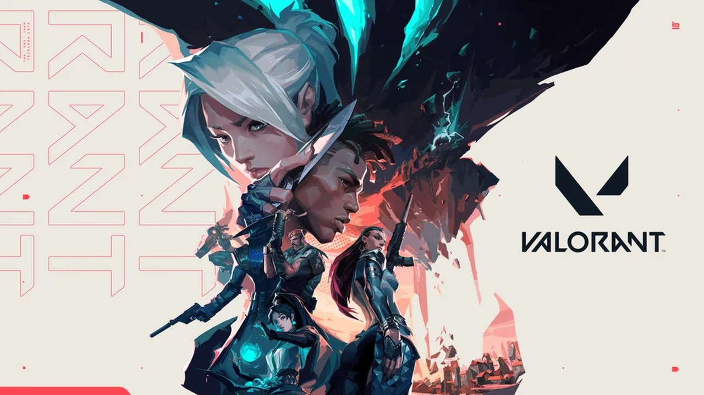

10월에는 이데이와 워독스 평가가 내려갔고 아크 PvE 제목 수는 테스트 일정에 따라 출렁였습니다. 이데이 스팀 평가는 출시일까지 85%에서 약 78%로 내려갔습니다. 그동안 토론장 글은 554개에서 1,723개로 불었습니다. 아크 레이더스는 PvE 제목이 첫 15건 중 2건에서 14건까지 올랐다가 3건으로 줄었습니다. 워독스 한국어 평가는 1,198개·58%가 9일째 이어진 뒤 10/26 판에서 2,234개·31%로 바뀌었습니다. 같은 값을 새 값으로 읽을 위험이 한 달 내내 따라다녔습니다. 국내에서는 핫벤 상위 30건에 슈터 글이 없는 날이 이어졌습니다. 방법 이 판은 11월 3일에 사후 작성했습니다.
이 리포트
월간 리포트는 새로 검색하지 않고 주간 리포트 4건(W40–W43)과 10월 26일~30일 일간 5건을 다시 읽어 해석합니다. 이 판은 월말 당일에 실행하지 못했고 11월 3일 10시대에 확인했습니다. 근거는 하단 주차별 다이제스트에서 해당 리포트를 참조하세요. 주간 W44와 10월 31일 일간(No.114)은 병렬로 제작 중이라 수치를 쓰지 않았습니다. 11월 3일 10시대에 읽은 값은 그렇게 따로 적었습니다.
이 달의 지배 이슈
출시 직후 평가 하락
이데이 스팀 평가 85%에서 78%(10/3~7) · 토론장 554건에서 1,723건
가장 오래 끈 논란
아크 레이더스 PvE 테스트
PvE 제목 2건에서 14건(10/12~15) → 10/30 판 3건 · 영구 도입 미확정
수치 신뢰
워독스 한국어 평가 58%에서 31%
1,198개·58%가 9일째 같았고 10/26 판에서 2,234개·31%
다음 달 분수령
11/3 · 11/7 · 11/10
11/3 디비전 2 확장(예정) · 11/7 배틀필드 6 Dead Space 종료 · 11/10 카지노 하이스트 2단계
01
이 달의 장르 트렌드
개별 사건이 아니라 10월 내내 여러 게임에서 반복된 흐름만 골랐습니다.
트렌드 01 · 출시 직후 평가
기어스 오브 워: 이데이는 출시일까지 평가가 내려가고 토론장이 빠르게 커졌습니다.
무슨 일이10/1 가디언 유출 리뷰는 5점 만점에 3점이었습니다. 10/3 스팀 평가는 1,239개 중 약 85%이고 토론장 글은 554개였습니다. 10/4에는 2,007개 중 82%로 내려갔습니다.이후 사흘 동안 평가는 79%와 78%로 내려갔고 토론장 글은 1,061개와 1,313개로 불었습니다. 10/7 출시일 기록은 3,972개 중 약 78%와 글 1,723개였습니다.
어떻게 전개됐나10/8 토론장 첫 화면 15건 중 7건이 논쟁과 운영 이야기였습니다. 10/13~15에는 스팀 최다 플레이 상위 100위 안에 보이지 않았습니다.에이스 컴뱃 8은 10/1 평가 74%로 출발해 10/4 9,989개 중 약 76%를 기록했습니다. 불만은 HOTAS 글 답글 183개에서 리눅스 글 34개로 옮겨 갔습니다. 10/4 첫 화면은 성능 글과 미션 진행 글이 섞였습니다.
무엇을 시사하나출시 첫 주에는 평가가 내려가는 동안 토론장 글이 먼저 커졌습니다. 두 값은 같은 날 함께 읽어야 합니다.에이스 컴뱃 8은 사과 뒤에도 불만 주제가 바뀌며 이어졌습니다. 글 분류 기준과 환불 안내 문구를 출시 전에 정해 두어야 합니다.
트렌드 02 · 아크 PvE 테스트
아크 레이더스는 PvE 테스트 일정에 따라 토론 첫 화면의 PvE 제목 수가 크게 출렁였습니다.
무슨 일이10/8 맨 위 목록의 PvE 주제는 6건이었고 댓글은 합쳐 620개였습니다. 10/12 첫 15건 중에는 2건뿐이었습니다. 10/13 PvE 전용 테스트가 시작됐고 PvPvE 불만 글에는 답글 1,467개가 달렸습니다.제목은 10/14에 9건, 10/15와 10/16에 14건까지 올랐습니다. 이후 사흘은 6건, 8건, 6건이었습니다.
어떻게 전개됐나테스트는 10/20 18시에 끝날 예정이었습니다. 10/21~22 화면은 낡아서 종료 여부를 확인하지 못했습니다. 10/24 공식 블로그를 인용한 보도로 종료가 확인됐고 제목은 3건이었습니다.10/25에는 9건으로 다시 늘었고 설문 글에 답글 353개가 붙었습니다. 이 화면도 낡았을 수 있습니다. 10/29는 5건에 최다 답글 442개, 10/30은 3건에 최다 답글 233개였습니다. 영구 도입은 어느 판에서도 정해지지 않았습니다.
무엇을 시사하나테스트가 끝난 뒤에도 PvE 글은 사라지지 않고 3~9건을 오갔습니다. 종료는 개발사 공지보다 보도로 먼저 확인됐습니다.Insider Gaming은 11월 계획 공개를 예고했습니다. 공개되기 전까지는 같은 방식으로 매일 세는 편이 안전합니다.
트렌드 03 · 같은 값과 낡은 화면
같은 수치와 낡은 화면이 여러 게임에서 되풀이돼 증감으로 읽을 수 없는 날이 많았습니다.
무슨 일이워독스 한국어 평가는 10/16에 1,198개·58%로 집계됐습니다. 10/17부터 같은 값이어서 10/25 판은 9일째였습니다. 10/26 판에서 2,234개·31%로 바뀌었습니다.10/29 판은 2,347개·30%였고 10/30 판도 같았습니다. 아크 레이더스 답글 310개와 282개는 10/20부터 10/22까지 그대로였습니다. 마이코펑크 4,148개·88%도 10/20~24에 움직이지 않았습니다.
어떻게 전개됐나10/28 판은 워독스, 아크, 배틀필드 6 토론이 전날과 같은 화면이라 표에서 뺐습니다. 10/29 판에서는 마블 라이벌즈 쪽이 그랬습니다. 10/30 판은 워독스, Sulfur, 마이코펑크, 메트로 평가 수가 하루 전과 같았습니다.10/26 판 최근 30일 전 언어 평가는 46,476개·56%였고 한국어는 31%였습니다. 대상이 달라 두 값을 한 표에 섞지 않았습니다.
무엇을 시사하나같은 값이 이틀 이어지면 새 값인지 알 수 없습니다. 58%에서 31%로의 변화는 하루 증감이 아닙니다. 갱신 시차가 섞였을 수 있습니다.수치 옆에 읽은 시각을 적고 어제와 같은 값이라는 표시를 붙여야 합니다.
트렌드 04 · 표기 엇갈림
출시일과 가격이 출처마다 하루씩, 또는 5달러씩 다르게 적혀 확인이 필요했습니다.
무슨 일이이데이는 IGDB 10/6과 한국어 상점 10/7로 갈렸고 볼트건 2는 IGDB 10/14와 상점 10/15로 갈렸습니다. 에이스 컴뱃 8은 스팀 10/1, 한국 10/2였습니다.배틀필드 6 시즌 5는 서구 보도 10/13, 인벤 10/14로 엇갈렸습니다.
어떻게 전개됐나볼트건 2는 출시 3일 전 판에서 상점과 보도가 10/14로 맞았습니다. Dead Space 이벤트 시작일은 MP1st 10/20, 인벤 10/21로 갈렸고 종료는 11/7입니다.메트로 리덕스 PC는 10/22 보도와 IGDB 캐시 10/29가 달랐습니다. 10/29는 콘솔판 날짜였습니다. Sulfur 가격은 10/30 판에서 보도 29.99달러, 스팀 상점 24.99달러로 어긋났습니다. 11/3 10시대에 다시 읽으니 29.99달러였습니다.
무엇을 시사하나날짜는 하루, 가격은 5달러 차이였습니다. 어느 쪽이 맞는지는 판마다 다시 대조해야 했습니다.IGDB 캐시는 상점 확인 전 값입니다. 스팀 상점과 공지로 다시 맞춰 안내해야 합니다.
02
반복된 실패·성공 패턴
10월에 두 번 이상 관찰된 운영 패턴만 추려 우리 교훈으로 정리했습니다.
| 패턴 | 10월 관찰 사례 | 왜 그렇게 됐나 | 우리 운영 규칙으로 옮기면 |
|---|
실패 A
출시 첫 주 토론장에 분류 기준이 없었음 |
이데이 토론장 글은 10/3 554개에서 10/7 1,723개로 불었습니다. 10/8 첫 화면 15건 중 7건이 논쟁과 운영 이야기였습니다. 10/4 판에서는 "Just got my refund" 글에 답글 101개가 달렸습니다. |
환불을 알리는 글과 논쟁 제목이 함께 첫 화면을 채웠습니다. 출시 전에 마련한 분류 기준은 판에서 확인되지 않았습니다. |
출시 전날 토론장 글 분류 기준을 정합니다. 환불 문의에 쓸 안내 문구를 미리 마련합니다. 평가와 글 수는 같은 시각에 함께 기록합니다. |
실패 B
테스트 종료와 후속 계획을 따로 알림 |
PvE 테스트는 10/13~10/20 18시로 안내됐고 종료 확인은 10/24 보도로 나왔습니다. 10/21~22 화면에서는 종료 여부를 확인하지 못했습니다. 10/25 설문 글에는 답글 353개가 달렸습니다. |
11월 계획 공개 예고만 있고 영구 도입은 정해지지 않았습니다. 10/23에는 PvE 용어를 쓴 제목이 첫 15건 중 8건이었고 일부는 모드가 없다는 전제를 깔았습니다. |
종료 시각과 후속 공개 예정일을 한 글에 적습니다. 영구 도입처럼 정해지지 않은 일은 확정 표현으로 쓰지 않습니다. |
실패 C
국내 슈터 이야기가 모일 자리가 비어 있었음 |
인벤 핫벤 슈터 글은 10/19~10/25에 3건, 3건, 0건, 1건, 1건, 0건, 0건이었습니다. 10/28과 10/30 판 상위 30건에서도 슈터 글은 한 건도 없었습니다. 루리웹 신설 게시판 14종 중 슈터로 확인된 곳은 0곳이었습니다. |
10/30 판 핫벤 상위 30건은 로스트아크 27건이 채웠습니다. 10/12에는 T1 탈락으로 한국 팀이 모두 떠났고 국내 반응은 확인하지 못했습니다. |
국내 게시판은 직접 열어 건수를 기록합니다. 열지 못한 곳은 국내 반응 미확인으로 적습니다. |
실패 D
출시일과 가격 표기가 판마다 엇갈림 |
이데이는 IGDB 10/6, 스팀 10/7이었습니다. 배틀필드 6 시즌 5는 서구 10/13, 인벤 10/14였습니다. Sulfur는 보도 29.99달러, 상점 24.99달러였습니다. |
캐시와 보도와 상점이 서로 다른 시점의 값을 보여 줬습니다. 어긋난 이유는 10/30 판에서도 확인하지 못했습니다. |
일정과 가격은 스팀 상점과 공식 공지로 다시 맞춥니다. 출처가 갈리면 두 값을 나란히 적고 확인 날짜를 붙입니다. |
성공 A
정식 출시 뒤에도 평가를 지킨 게임 |
마이코펑크는 10/19 4,143개에서 10/20~24 4,148개까지 88%를 지켰습니다. Sulfur는 10/25 9,820개, 10/26 10,305개 모두 87%였습니다. 볼트건 2는 영어 상점 456개에서 94%였습니다. |
마이코펑크와 Sulfur는 앞서 해보기를 끝내고 1.0으로 나왔습니다. 출시 전후 평가 비율이 거의 움직이지 않았습니다. 다만 일부는 어제 판과 같은 값이라 갱신 여부는 알 수 없습니다. |
앞서 해보기에서 쌓은 평가 비율을 출시 전후로 같은 방식으로 기록합니다. 개수가 크게 바뀐 날을 따로 표시합니다. |
절반 성공
문제를 먼저 인정한 공지 |
배틀필드 6 개발사는 10/25 X에서 스킨 품질 미달을 인정했습니다. 관련 고정글 의견은 10/25 23개, 10/26 25개였습니다. 워독스 개발사는 시즌 2 진행 변경이 "the wrong call"이었다고 인정했다고 10/17 보도됐습니다. |
고정글 의견은 23개에서 25개로 늘었지만 크래시 제목은 10/26 5건, 10/29 5건, 10/30 0건으로 오르내렸습니다. 워독스 한국어 평가도 30%대였습니다. |
인정 글에는 고칠 날짜를 함께 적습니다. 공지 뒤 이틀 동안 제목과 평가를 같은 방식으로 다시 셉니다. |
03
게임별 한 달 요약
10월 한 달(10/1–10/31) 동안의 궤적과 월말 상태입니다. ↑ 개선 · ↓ 악화 · → 유지 · ↕ 오르내림. 10/31은 수치가 없는 사후 판이라 월말 상태는 10/30 판 기준입니다.
근거 표기KR·기사국내 매체가 전한 여론글로벌·기사해외 매체가 전한 여론커뮤니티원문 글을 직접 확인공식공식 공지가 근거(여론 아님)지표동접·평점 등 수치국내 반응 미확인국내 소스에서 확인 못 함
| 게임 | 10월 궤적 | 월말 상태 | 근거 |
|---|
 오버워치인벤 자유게시판 오버워치인벤 자유게시판 |
10/2 매칭 항의가 5일째 이어졌고 PC방 점유율 글은 1,153회 읽혔습니다. 10/3 BEST 6건 중 4건이 경쟁전 드라이브였습니다. 10/5 시즌 5 스킨 유출 제목은 1,660회였습니다. 10/7 시즌 5와 함께 시메트라 일시 비활성화 안내가 올라왔습니다. 10/15 패치노트 글은 3,963회였고 10/23 스텔라 블레이드 콜라보가 발표됐습니다. |
→ 낮은 보합 10/28 새 12글 최다 조회는 174회, 10/30은 572회였습니다. 11/3 10시대에 읽은 11/2 저녁 글 4건은 조회 109~253회였습니다. 시즌 5는 11/3 종료로 적혀 있으나 당일 다시 확인하지 못했습니다. |
커뮤니티지표 |
 워독스앞서 해보기 · 시즌 2 워독스앞서 해보기 · 시즌 2 |
10/4 초기화 문의 글에는 답글 163개가 달렸습니다. 한국어 평가는 10/3 994개 중 59%, 10/9 974개 중 60%였습니다. 10/15 시즌 2가 열렸고 10/16 평가는 1,198개·58%가 됐습니다. 10/19 팀 시스템 불만 글 답글은 628개였습니다. 10/26 판 평가는 2,234개·31%로 바뀌었습니다. |
↓ 악화 10/30 판 한국어 평가는 2,347개·30%, 최근 30일 전 언어는 45,298개·54%입니다. 같은 값을 11/3 10시대에도 읽었습니다. 10/30 토론 첫 12건 중 치트 제목은 2건이었습니다. 표본 개수가 판마다 달라 증감은 단정하지 않습니다. |
커뮤니티지표글로벌·기사 |
 아크 레이더스PvE 테스트 이후 아크 레이더스PvE 테스트 이후 |
10/8 PvE 주제 6건에 댓글 합계 620개가 달렸습니다. 10/13 테스트가 시작됐고 PvPvE 불만 글 답글은 1,467개였습니다. 10/14 동접은 131,068명으로 스팀 6위였습니다. 제목은 10/15에 14건까지 올랐다가 10/24에 3건이 됐습니다. 10/25 설문 글 답글은 353개였습니다. |
→ 논쟁 지속 10/30 첫 12건 중 PvE 제목은 3건이고 최다 답글은 233개입니다. 괴롭힘 제목에는 42개가 달렸으나 본문은 열지 못했습니다. 영구 도입은 정해지지 않았습니다. 한국어 평가 3,120개·77%는 11/3 10시대에도 같았습니다. |
커뮤니티공식지표 |
 배틀필드 6시즌 5 · Dead Space 배틀필드 6시즌 5 · Dead Space |
10/12 스팀 차트는 54위였고 10/14 시즌 5 개막 뒤 25위가 됐습니다. 10/15 XP 상한과 30달러 레벨 판매가 새 쟁점이 됐습니다. 10/20 무료 체험이 끝났고 Dead Space 이벤트가 이어졌습니다. 10/25 개발사가 스킨 품질 미달을 인정했습니다. 크래시·오류 제목은 10/26에 0건에서 5건이 됐고 10/29는 5건, 10/30은 0건이었습니다. |
↕ 오르내림 10/30 토론 활성 주제는 1,661건입니다. Dead Space 이벤트는 11/7까지입니다. 11/3 10시대에 읽은 스팀 고정글은 "[BFComms] Ranked BR Crossplay Update"와 "Status and Known Issues - Last Updated October 27"입니다. |
커뮤니티지표글로벌·기사 |
 기어스 오브 워: 이데이출시 첫 주 기어스 오브 워: 이데이출시 첫 주 |
10/3 평가는 1,239개 중 약 85%, 토론장 글은 554개였습니다. 10/7 출시일에는 3,972개 중 약 78%와 1,723개를 기록했습니다. 10/8 첫 화면 15건 중 7건이 논쟁이었습니다. 10/13 Metacritic은 88점이었고 스팀 최다 플레이 상위 100위 안에는 없었습니다. |
↓ 악화 10/14 IGN은 10점 만점에 9점을 줬습니다. 스팀은 연령 확인 화면이 떠서 이후 평가 수를 읽지 못했습니다. 그래서 10월 중순 이후 평가 변화는 모릅니다. |
커뮤니티지표글로벌·기사 |
 에이스 컴뱃 8스팀 10/1 · 한국 10/2 에이스 컴뱃 8스팀 10/1 · 한국 10/2 |
10/1 스팀 평가는 74%로 출발했고 HOTAS 불만 글 답글은 183개였습니다. 10/2 리눅스 불만 글에는 34개가 달렸습니다. 10/4 평가는 9,989개 중 약 76%, 한국어는 300개 중 77%였습니다. 10/6 한국어 평가는 402개 중 79%였고 10/13 스팀 순위는 82위였습니다. |
→ 안정 10/12~15 전체 평가 4,531개·77%는 같은 값이라 갱신 여부를 알 수 없습니다. 판마다 표본 범위가 달라 개수는 견주지 않았습니다. 둘째 주부터 일간 판의 비중이 작아졌습니다. |
지표커뮤니티공식 |
 마블 라이벌즈시즌 10.5 · 매치 운영 마블 라이벌즈시즌 10.5 · 매치 운영 |
10/9 시즌 10.5가 열렸습니다. 10/28 고정글 5개를 뺀 첫 10건 중 3건이 매치 운영 불만이었습니다. 매치메이킹 글 답글은 63개, 이탈 페널티 글은 15개였습니다. Dev Talk Vol.14 고정글 답글은 260개였습니다. |
→ 유지 10/28 한국어 평가는 2,187개·74%, 최근 30일 전 언어는 7,651개·61%입니다. 11/3 10시대에 읽은 고정글 "Dev Talk Vol.13 | Seasonal Balance & Competitive Performance"는 스팀 표기 Nov 1 @ 12:59pm에 갱신됐고 답글 221개입니다. Vol.14는 262개입니다. |
커뮤니티지표 |
 발로란트VCT 챔피언스 상하이 |
10/9 상위 8강에서 T1이 0대2, 농심 레드포스가 Vitality에 1대2로 졌습니다. 10/10 농심이 탈락했고 T1은 Paper Rex를 2대1로 꺾었습니다. 10/12 T1이 G2에 1대2로 져 한국 팀이 모두 떠났습니다. 10/17 LOUD가 Vitality를 2대1로 눌렀습니다. |
→ 종료 10/18 그랜드 파이널에서 LOUD가 Vitality를 3대1로 꺾고 우승했습니다. 한국 팀이 없어 국내 반응은 확인하지 못했습니다. |
KR·기사글로벌·기사국내 반응 미확인 |
04
이 달의 신작 출시·발표 결산
10월 일간과 주간 리포트의 신작 표에 오른 이름을 한 달 단위로 묶었습니다. 출시 7종, 발표 4종이며 흥행과 부진은 스팀 평가로 가렸습니다. 평가를 지킨 쪽은 마이코펑크 88%, Sulfur 87%, 볼트건 2 94%입니다. 내려간 쪽은 이데이 85%에서 78%입니다. 판매량은 10월 판에 없습니다.
| 게임 | 상태 · 날짜 | 10월 결과 | 근거 |
|---|
에이스 컴뱃 8: 시브의 날개스팀 10/1 · 한국어 10/2 |
출시 10/1 |
스팀 평가는 74%로 출발해 10/4 9,989개 중 약 76%가 됐습니다. 10/13 스팀 순위는 82위였습니다. |
지표커뮤니티 |
기어스 오브 워: 이데이Xbox · PC |
출시 10/7 |
평가는 약 85%(10/3)에서 약 78%(10/7)로, 토론장 글은 554개에서 1,723개로 늘었습니다. 10/13~15 스팀 최다 플레이 100위 밖이었습니다. |
지표커뮤니티글로벌·기사 |
 워해머 40,000: 볼트건 210/14 영어 상점 기준 워해머 40,000: 볼트건 210/14 영어 상점 기준 |
출시 10/14 |
출시 3일 전까지 평가는 0건이었습니다. 영어 상점 평가는 456개, 긍정 94%입니다(10/19~20 값). |
지표글로벌·기사 |
 마이코펑크 (Mycopunk)정식 1.0 · PC·PS5 마이코펑크 (Mycopunk)정식 1.0 · PC·PS5 |
출시 10/20 |
평가는 4,143개에서 4,148개로 88%를 지켰습니다. 11/3 10시대에 읽은 값은 4,523개 88%, 최근 30일 435개 82%입니다. 50% 할인은 11/3까지입니다. |
지표글로벌·기사 |
 메트로 2033·라스트 라이트 리덕스무료 업데이트 메트로 2033·라스트 라이트 리덕스무료 업데이트 |
출시 PC 10/22 · 콘솔 10/29 |
한국어 평가는 1,320개에서 1,323개로 83%였습니다. 최근 30일은 1,245개 중 86%입니다. |
지표글로벌·기사 |
 Sulfur1.0 · 앞서 해보기 종료 Sulfur1.0 · 앞서 해보기 종료 |
출시 10/28 |
전체 평가는 9,820개(10/25)에서 10,305개(10/26)로 87%였습니다. 11/3 10시대에 읽은 값은 10,762개 87%, 최근 30일 1,001개 81%입니다. 멀티플레이는 1.0에 없습니다. |
지표글로벌·기사 |
 HYPERVIOLENT콘솔판 HYPERVIOLENT콘솔판 |
출시 10/29 |
콘솔판이 나왔고 스팀 평가는 156개 중 68%입니다. PC판은 2025년 9월 23일에 나왔습니다. |
지표글로벌·기사 |
오버워치 × 스텔라 블레이드EVE Protocol 콜라보 |
발표 10/23 |
출시일, 스킨, 가격은 공개되지 않았습니다. 인벤 관련 제목은 10/24 4건에서 10/25 0건이 됐고 스킨 소개 글은 10/26 판에서 458회 읽혔습니다. |
커뮤니티글로벌·기사 |
아크 레이더스 PvE 테스트종료 확인 · 11월 계획 예고 |
발표 10/24 |
공식 블로그를 인용한 보도로 테스트 종료가 확인됐습니다. 11월 계획 공개가 예고됐고 영구 도입은 정해지지 않았습니다. |
공식글로벌·기사커뮤니티 |
디비전 2 센트럴 파크의 메아리확장 DLC |
예정 11/3 |
유비소프트 공지 기준이며 IGDB 캐시 날짜와 맞습니다. 새 지도, 동료 3명, 엑조틱 무기 The Ratel이 소개됐습니다. |
공식글로벌·기사 |
타르코프 좀비 할로윈 이벤트준비 중 |
발표 날짜 미공개 |
Insider Gaming이 10/26 준비 중이라고 전했습니다. 시작 여부는 확인하지 못했습니다. |
글로벌·기사 |
05
다음 달 주요 일정
11월에 마감·시작·전환되는 일정입니다. 11/3 일정은 10/30 판 기준이라 예정으로 적었습니다.
11월 일정 10건
- 11.03 화예정디비전 2 센트럴 파크의 메아리 확장 출시유비소프트 공지 · 레벨 40 미만 부스트
- 11.03 화종료오버워치 시즌 5 종료블리자드 한국 기준 · 11/3 재확인 못함
- 11.03 화종료마이코펑크 50% 할인 마감스팀 표기 · 7.49달러
- 11.07 토종료배틀필드 6 Dead Space 이벤트 종료MP1st 기준
- 11.10 화시작배틀필드 6 카지노 하이스트 2단계MP1st 기준
- 11.12 목종료서든어택 콤보 패스 시즌4 마감인벤 10/15 기사
- 11.13까지캐시IGDB 등재작 34종(디비전 2를 뺀 대부분이 소형작)IGDB 캐시 값 · 상점 확인 전
- 날짜 미공개예고아크 레이더스 11월 계획 공개Insider Gaming 보도
- 날짜 미공개예고워독스 시즌 3 개발 영상Insider Gaming 보도
- 날짜 미공개예고타르코프 좀비 할로윈 이벤트Insider Gaming 10/26
06
CM 액션 제안
10월 관찰에서 나온, 월 단위 기획에 바로 넣을 수 있는 세 가지입니다.
1
디비전 2 확장 출시 전에 토론장 분류 기준과 환불 문의 문안을 정해 둡니다.
이데이 토론장은 출시일까지 554개에서 1,723개로 불었습니다. 10/8 첫 화면 15건 중 7건이 논쟁과 운영 이야기였습니다. 평가는 약 85%에서 약 78%로 내려갔습니다.① 첫 주 토론장 글을 논쟁과 결함으로 나누는 기준을 출시 전날 정합니다.② 환불 문의에 쓸 안내 문구를 미리 마련합니다.③ 평가와 글 수를 같은 시각에 함께 기록합니다.
2
수치마다 읽은 시각과 같은 값 여부를 적어 증감 계산에서 걸러 냅니다.
워독스 한국어 평가는 1,198개·58%가 9일째 같다가 10/26 판에서 2,234개·31%가 됐습니다. 10/28 판은 토론 세 곳을 낡은 화면으로 보고 뺐습니다.① 수치 옆에 읽은 시각을 적습니다.② 어제와 같은 값은 증감 표에 넣지 않습니다.③ 이틀 이상 같으면 다른 화면으로 다시 확인합니다.
3
아크 PvE 후속 안내가 나오기 전까지 같은 방식으로 반응을 매일 기록합니다.
PvE 테스트 종료는 10/24 보도로 확인됐고 영구 도입은 정해지지 않았습니다. 제목은 3건에서 9건 사이를 오갔고 최다 답글은 10/29 442개, 10/30 233개였습니다.① 첫 12건 중 PvE 제목 수를 매일 같은 방식으로 셉니다.② 최다 답글을 기준값으로 적어 둡니다.③ 영구 도입은 확정 표현 없이 보도 기준으로만 안내합니다.
07
주차별 다이제스트
10월 일간 리포트 31건(No.84–No.114)을 ISO 주차로 묶었습니다. W40은 9/28~10/4 중 10월분, W44는 10/26~11/1 중 10월분입니다.
2026-W40 – 2026-W44
- W40No.84–87이데이는 출시 전에 평가가 85%에서 82%로 내려갔습니다. 에이스 컴뱃 8은 74%로 출발했고 HOTAS 글 답글은 183개였습니다. 블랙 버짓은 인벤 보도에서 개발 종료로 전해졌습니다.10/1–10/4 (9/28~10/4 중 10월분) · 주간 리포트 보기
- W41No.88–94이데이 평가가 78%로 내려가고 토론장은 1,723개가 됐습니다. 오버워치 불만은 드라이브에서 시메트라와 호그로 옮겨 갔습니다. 10/9 T1이 0대2로, 농심 레드포스가 1대2로 졌습니다.10/5–10/11 · 주간 리포트 보기
- W42No.95–101T1이 10/12 탈락해 한국 팀이 모두 떠났습니다. 아크 PvE 제목은 2건에서 14건으로 늘었습니다. 워독스 한국어 평가는 하루 새 224개 늘고 58%가 됐습니다.10/12–10/18 · 주간 리포트 보기
- W43No.102–108아크 PvE 테스트 종료가 10/24 보도로 확인됐습니다. 워독스 한국어 평가는 9일째 같은 값이었습니다. 마이코펑크 1.0은 10/20에 나와 88%를 지켰습니다.10/19–10/25 · 주간 리포트 보기
- W44No.109–114배틀필드 6 크래시 제목이 10/26 5건, 10/30 0건이었습니다. Sulfur 1.0이 10/28 나왔고 평가는 87%였습니다. 10/30 판 핫벤 슈터 글은 0건이었습니다. 10/31(No.114)은 사후 작성이라 수치가 없습니다.10/26–11/1 (10월분) · 주간 리포트는 병렬 제작 중 · 주간 리포트 보기
사후
이 월간 리포트는 11월 3일 10시대에 처음 실행해 사후 작성했습니다. 월말 당일에는 만들지 못했습니다. 재료는 주간 W40~W43과 10/26~30 일간이며 새 검색은 없습니다.결손 W44 리포트와 10/31 일간(No.114)은 병렬로 소급 제작 중이라 수치를 가져오지 않았습니다. 11/3 10시대에 읽은 스팀 값은 일별 증감 계산에서 뺐습니다. 같은 값이 이어진 수치는 갱신 여부를 알 수 없습니다. 판매량은 10월 판에 없어 흥행은 평가로만 가렸습니다.
근거가 된 리포트
FPS 이벤트 동향 레이더 · 라이온하트 · 월간 종합 리포트 · 2026년 10월 (일간 No.84–No.114 · 31건 범위, No.114는 수치 없음)
모니터링: 루리웹 · 인벤 · 아카라이브 · 스팀 커뮤니티 · 해외 전문지 (국내+글로벌 병행)